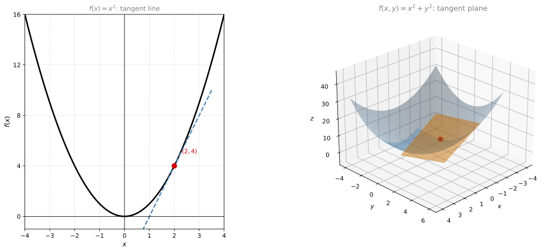
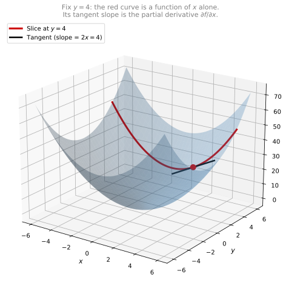
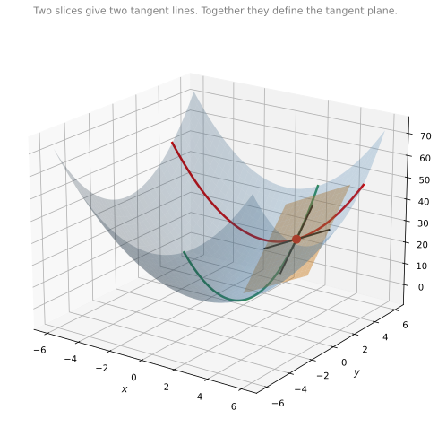

Partial Derivatives
calculus
So far, everything has been about functions of one variable: , with one input and one output. Now we move to functions of two or more variables, like ….
So far, everything has been about functions of one variable: \(f(x) = x^2\), with one input and one output. Now we move to functions of two or more variables, like \(f(x, y) = x^2 + y^2\). This is where machine learning lives, since models typically have thousands or millions of parameters.
The good news: all the ideas from Week 1 (derivatives, optimization, finding where the slope is zero) carry over. They just need to be extended. However, optimizing functions in two or more variables can get very complicated, even for a computer. We’ll introduce methods that speed this up, most importantly one called gradient descent.
But before that, let’s start with a very important concept: the tangent plane.
From Tangent Lines to Tangent Planes
In one dimension, the derivative at a point gives the slope of the tangent line. For example, for \(f(x) = x^2\) at \(x = 2\), the derivative is \(f'(2) = 4\), and the tangent line has slope 4.
What happens with two variables? Consider \(f(x, y) = x^2 + y^2\). This function has two inputs and one output, so it lives in 3D space: \(x\) and \(y\) are the horizontal axes (the “floor”), and \(z = f(x,y)\) is the height. The surface looks like a bowl.
At any point on this surface, the tangent is no longer a line. It’s a tangent plane: a flat sheet that just touches the surface at that point (orange in the plot above).
How to Find the Tangent Plane
To get the tangent plane, we “slice” the 3D surface in two perpendicular directions and find the tangent line in each slice.
Slice 1: Fix \(y = 4\).
When \(y\) is fixed at 4, we’re left with a function of \(x\) alone:
\[ f(x, 4) = x^2 + 4^2 = x^2 + 16 \]
This is a parabola in the \(xz\)-plane. Its derivative with respect to \(x\) is \(2x\). At \(x = 2\), the slope is \(4\). That gives us one tangent line direction.
Slice 2: Fix \(x = 2\).
When \(x\) is fixed at 2, we’re left with a function of \(y\) alone:
\[ f(2, y) = 2^2 + y^2 = 4 + y^2 \]
This is a parabola in the \(yz\)-plane. Its derivative with respect to \(y\) is \(2y\). At \(y = 4\), the slope is \(8\). That gives us the other tangent line direction.
Two lines that cross define a unique plane. That plane is the tangent plane at the point \((2, 4, 20)\).
Note
Key idea: To understand a surface at a point, slice it in each variable direction separately, and find the slope in each slice. These slopes are called partial derivatives.
Partial Derivatives
Imagine you have a 3D surface and you slice it with a vertical plane. In the slice, you see a curve (like a parabola). You can draw a tangent line to that curve. The slope of that tangent is the partial derivative.

Cut in a different direction (fix \(x = 2\)), and you get a different parabola with a different tangent. That slope is the other partial derivative \(\frac{\partial f}{\partial y}\).

The red curve is the slice at \(y = 4\) (its tangent slope is \(\frac{\partial f}{\partial x} = 2x = 4\)). The green curve is the slice at \(x = 2\) (its tangent slope is \(\frac{\partial f}{\partial y} = 2y = 8\)). The two black tangent lines, taken together, define the orange tangent plane.
Note
Notation: The partial derivative of \(f\) with respect to \(x\) is written as \(\frac{\partial f}{\partial x}\) (read “partial f, partial x” or “dee f, dee x”) or \(f_x\). The symbol \(\partial\) (curly d) distinguishes it from the ordinary derivative \(\frac{df}{dx}\).
Two-Step Recipe
To find the partial derivative of \(f(x, y)\) with respect to \(x\):
- Treat all other variables as constants (in this case, treat \(y\) as a constant).
- Differentiate using the normal rules (power rule, chain rule, etc.).
That’s it. You already know how to do this. It’s just a regular derivative, but you ignore the other variables.
Example 1: \(f(x, y) = x^2 + y^2\)
Find \(\frac{\partial f}{\partial x}\):
Step 1: Treat \(y\) as a constant. So \(y^2\) is just some constant (like 1, or 7, doesn’t matter).
Step 2: Differentiate \(x^2 + \text{constant}\) with respect to \(x\):
\[ \frac{\partial f}{\partial x} = 2x + 0 = 2x \]
The \(y^2\) term vanishes because the derivative of a constant is zero.
Find \(\frac{\partial f}{\partial y}\):
Step 1: Now treat \(x\) as a constant. So \(x^2\) is just some constant.
Step 2: Differentiate \(\text{constant} + y^2\) with respect to \(y\):
\[ \frac{\partial f}{\partial y} = 0 + 2y = 2y \]
\[ x^2 + y^2 \]
| Treat \(y\) as a constant | Treat \(x\) as a constant |
| \(\downarrow\) | \(\downarrow\) |
| \(2x\) | \(2y\) |
\[ f(x,y) \]
| \(f_x = \frac{\partial f}{\partial x}\) | \(f_y = \frac{\partial f}{\partial y}\) |
| Partial derivative of \(f\) | Partial derivative of \(f\) |
| with respect to \(x\) | with respect to \(y\) |
If you have a function of 10 variables, you can take 10 partial derivatives, one with respect to each variable. Each one tells you the slope in that variable’s direction while holding everything else fixed.
Example 2: \(f(x, y) = 3x^2 y^3\)
This is a product of terms involving both variables, so it’s a bit more interesting.
Find \(\frac{\partial f}{\partial x}\):
Step 1: Treat \(y\) as a constant. The factor \(y^3\) is just a constant multiplier.
Step 2: Differentiate \(3x^2 \cdot y^3\) with respect to \(x\). The constants (\(3\) and \(y^3\)) stay, and the derivative of \(x^2\) is \(2x\):
\[ \frac{\partial f}{\partial x} = 3 \cdot 2x \cdot y^3 = 6xy^3 \]
Find \(\frac{\partial f}{\partial y}\):
Step 1: Treat \(x\) as a constant. The factor \(x^2\) is just a constant multiplier.
Step 2: Differentiate \(3x^2 \cdot y^3\) with respect to \(y\). The constants (\(3\) and \(x^2\)) stay, and the derivative of \(y^3\) is \(3y^2\):
\[ \frac{\partial f}{\partial y} = 3 \cdot x^2 \cdot 3y^2 = 9x^2 y^2 \]
Review Questions
1. Find \(\frac{\partial f}{\partial x}\) and \(\frac{\partial f}{\partial y}\) for \(f(x,y) = 5x^3 - 2xy + y^2\).
TipAnswer
\(\frac{\partial f}{\partial x} = 15x^2 - 2y\) (treat \(y\) as constant, differentiate with respect to \(x\)).
\(\frac{\partial f}{\partial y} = -2x + 2y\) (treat \(x\) as constant, differentiate with respect to \(y\)).
1. For \(f(x,y) = e^x \sin(y)\), find \(\frac{\partial f}{\partial x}\).
TipAnswer
Treat \(\sin(y)\) as a constant. The derivative of \(e^x\) is \(e^x\). So: \(\frac{\partial f}{\partial x} = e^x \sin(y)\).